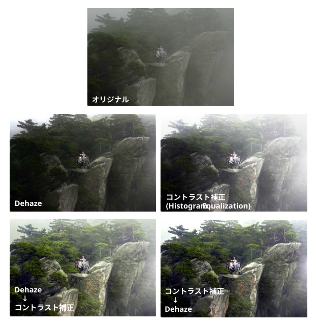
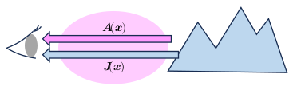
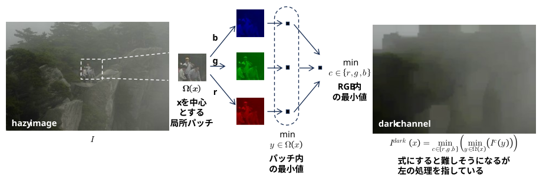
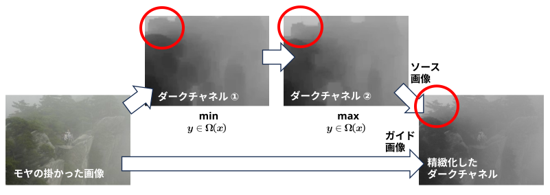

画像から霧や霞（かすみ）を除去して鮮明にするタスク（Dehaze）で使われる、統計的仮説（事前情報）のこと。
2009 年に (後に ResNet, DNNパラメータ初期化法、MaskR-CNNなどで有名になる) Kaiming He氏らによって提案された。
"これは、「モヤのない屋外画像の局所領域（パッチ）の大部分において、少なくとも一つのカラー・チャネルで非常に低い輝度値を持つ画素が必ず存在する」という重要な観察に基づいている。"
この事前知識を使うと、黒レベルの浮き具合からモヤの量を推定できる、モヤを除去できる。
仮説(事前知識)を用いて不良設定問題を解くお手本になるのでは？
不鮮明な画像を鮮明化するタスクにコントラスト補正があるが、コントラスト補正だけでは、モヤで明るいところを更に明るくする場合があるので、モヤの除去には適さない場合がある。

屋外の画像を構成する小領域 (パッチ) の色は、大気光 \(\boldsymbol{A}(\boldsymbol{x})\) とシーンの放射輝度 \(\boldsymbol{J}(\boldsymbol{x})\) が合成されたものになる。

大気は半透明なので、これをαブレンディングとしてモデル化すると
\[
\boldsymbol{I}(\boldsymbol{x})=\underbrace{t(\boldsymbol{x})}_{α}\boldsymbol{J}(\boldsymbol{x})+\big(\underbrace{1-t(\boldsymbol{x})}_{1-α}\big)\boldsymbol{A}(\boldsymbol{x})
\tag{1}
\]
となる。(式の番号は論文に合わせる)
・\(\boldsymbol{I}\): 観測される輝度
・\(\boldsymbol{J}\): シーンの放射輝度
・\(\boldsymbol{A}\): 大気光
・\(\boldsymbol{x}\): ピクセル座標
・\(t\): 大気の透過度
Dehaze (ヘイズ除去)タスクの目的
・\(\boldsymbol{I}\) から \(\boldsymbol{J}\)、\(\boldsymbol{A}\)、\(t\) を復元すること。
一枚の画像のみから Dehaze を行うには、情報が不足している(不良設定問題)。
・\(\boldsymbol{J}\) 被写体の色は？
・\(\boldsymbol{A}\) 大気の色は？
・\(t\) 観測点から被写体までの距離(深度)に依存する。深度は？
⇒ 何らかの仮説が必要。
"dark channel prior は、ヘイズ (モヤ) のない屋外画像に関する次の観察に基づいています。"
空以外の領域の大部分において、少なくとも1つのカラーチャネルが、ある画素で非常に低い輝度値を示す
画像内の各ピクセルに対して近傍のパッチからダークチャネルを求める。

・モヤの掛かっていない画像 (\(\boldsymbol{J}\)) のダークチャネルは 0 に近くなる(はず)
・モヤの掛かっている画像 (\(\boldsymbol{I}\)) のダークチャネルは 0 にならない
→ モヤの量の情報を提供している(はず)
式(1) を RGB のカラープレーン毎の式にすると
\[
I^c(\boldsymbol{x})=t(\boldsymbol{x})J^c(\boldsymbol{x})+(1-t(\boldsymbol{x}))A^c
\]
(\(I, J, A\) の肩に \(c\) がついただけ･･･
後で RGB 間の最小をとるので、分けておきたい)
各ピクセルの近傍 \(Ω(\boldsymbol{x})\) では大気の透過度は一定 \(\tilde{t}(\boldsymbol{x})\) であると仮定して、近傍の最小値を取ると
(\(A^c\) もパッチ内で一定と想定している)
\[
\min\limits_{y\in\Omega(\boldsymbol{x})}\big(I^c(\boldsymbol{y})\big)
=\tilde{t}(\boldsymbol{x})\min\limits_{y\in\Omega(\boldsymbol{x})}J^c(\boldsymbol{y})+(1-\tilde{t}(\boldsymbol{x}))A^c \tag{6}
\]
となる。
両辺を \(A^c\) で割ると \[ \min\limits_{y\in\Omega(\boldsymbol{x})}\Big(\frac{I^c(\boldsymbol{y})}{A^c}\Big) =\tilde{t}(\boldsymbol{x})\min\limits_{y\in\Omega(\boldsymbol{x})}\Big(\frac{J^c(\boldsymbol{y})}{A^c}\Big) +\big(1-\tilde{t}(\boldsymbol{x})\big) \tag{7} \] となる。
RGB 間の最小値をとると
(大気の透過度 \(\tilde{t}\) はRGB間で一定と仮定している)
\[
\min\limits_c\Bigg(\min\limits_{y\in\Omega(\boldsymbol{x})}\Big(\frac{I^c(\boldsymbol{y})}{A^c}\Big)\Bigg)
=\tilde{t}(\boldsymbol{x})\underbrace{\min\limits_c\Bigg(\min\limits_{y\in\Omega(\boldsymbol{x})}\Big(\frac{J^c(\boldsymbol{y})}{A^c}\Big)\Bigg)}_{モヤのない画像では 0 のはず}
+\big(1-\tilde{t}(\boldsymbol{x})\big) \tag{8}
\]
Dark Channel Prior より \(\boldsymbol{J}\) のダークチャネルは 0 と仮定しているので
\[
\tilde{t}(\boldsymbol{x})=1-\min\limits_c\Bigg(\min\limits_{y\in\Omega(\boldsymbol{x})}\Big(\frac{I^c(\boldsymbol{y})}{A^c}\Big)\Bigg) \tag{11}
\]
となる。
"ヘイズ画像のダークチャネルはヘイズの濃度を良好に近似します。このダークチャネルを利用することで、大気光の推定精度を向上させることができます。まず、ダークチャネルにおいて輝度値が高い上位 0.1% の画素を抽出します。これらの画素はヘイズによる不透明度が最も高い領域に相当します。"
とのことなので、RGB のそれぞれのダークチャネルの高輝度ピクセル上位 0.1% から大気光を推定する。
ダークチャネルを構築する際、周辺領域として矩形のウィンドウを使うが、そのまま dehaze 処理を行うと、dehaze 画像にハロを生じるため、ダークチャネルを精緻化する必要がある。
論文ではソフトマット処理について議論しているが、2010 年に Kaiming He さんが発表した Guided Image Filter があるので、ありがたく使わせてもらう。

(「収縮」→「膨張」のマネをして「min」→「max」としてみた･･･)
ここまでで
・モヤの掛かった画像 \(\boldsymbol{I}\) をユーザーが指定する
→ \(\boldsymbol{I}\) から 大気光 \(\boldsymbol{A}\)を推定する
→ \(\boldsymbol{I}\)、大気光 \(\boldsymbol{A}\) から透過度 \(\tilde{t}\) を推定する
→ モヤの掛かっていない \(\boldsymbol{J}\) (シーン放射輝度)を復元する情報が出そろった
式 (1) を \(\boldsymbol{J}\) について解くと \[ \boldsymbol{J}(\boldsymbol{x}) = \frac{\boldsymbol{I}(\boldsymbol{x})-\boldsymbol{A}(\boldsymbol{x})}{t(\boldsymbol{x})}+\boldsymbol{A}(\boldsymbol{x}) \] \(t(\boldsymbol{x})\) の値が小さい場合、\(\boldsymbol{J}\) の値がノイズの影響で大きく変動するため、透過度の下限値 \(t_0\) を設けて以下のようにする。 \[ \boldsymbol{J}(\boldsymbol{x}) = \frac{\boldsymbol{I}(\boldsymbol{x})-\boldsymbol{A}(\boldsymbol{x})}{\max(t(\boldsymbol{x}),t_0)}+\boldsymbol{A}(\boldsymbol{x}) \tag{16} \] \(t_0\) の典型的な値は 0.1 とのこと。
ピクセルを中心としたウィンドウ内の最小値からダークチャネル①を作成する。
・ピクセル毎の 2 次元処理は、水平処理、垂直処理に分離できるなら分離した方が処理時間を短縮できる： \(n^2 \geq 2n \quad (n\geq 2)\)。
・min 演算、max 演算は分離可能であるが、numpy 内で分離しているようなので、明示的には分離していない。
・後で精緻化するので、呼び出し前に縮小し、呼び出し後に拡大して処理時間を短縮する。
def create_min_image(src, window_size):
half = window_size // 2
height, width = src.shape[:2]
dst = np.empty(src.shape, src.dtype)
b, g, r = cv2.split(src)
for y in range(height):
startY = np.max((0, y - half))
endY = np.min((height, y + half))
for x in range(width):
startX = np.max((0, x - half))
endX = np.min((width, x + half))
patch = b[startY:endY, startX:endX]
min_b = np.min(patch)
patch = g[startY:endY, startX:endX]
min_g = np.min(patch)
patch = r[startY:endY, startX:endX]
min_r = np.min(patch)
min_rgb = np.min(np.array([min_b, min_g, min_r]))
dst[y][x][0] = min_rgb
dst[y][x][1] = min_rgb
dst[y][x][2] = min_rgb
return dst
ダークチャネル①作成処理の np.min を np.max に変更する。
ダークチャネル②をソース画像、dehaze 対象のモヤの掛かった画像をガイド画像として Guided Image Filtering を行う。
size = 60
sigma = 1e-6 * 255 * 255
darkchannel = cv2.ximgproc.guidedFilter(hazy_image, dark_channel2, size, sigma)
ダークチャネルの高輝度ピクセル上位 0.1% から大気光を推定する。
def getAirLight(darkchannel):
height, width = darkchannel.shape[:2]
histogram = []
for ch in range(3):
histogram.append(cv2.calcHist([darkchannel], [ch], None, [256], [0, 256]))
th = width * height // 1000
boolB = boolG = boolR = False
numB = numG = numR = 0
sumB = sumG = sumR = 0
for i in reversed(range(256)):
if not boolB:
numB += histogram[0][i]
sumB += histogram[0][i] * i
if numB > th:
boolB = True
if not boolG:
numG += histogram[1][i]
sumG += histogram[1][i] * i
if numG > th:
boolG = True
if not boolR:
numR += histogram[2][i]
sumR += histogram[2][i] * i
if numR > th:
boolR = True
if boolB and boolG and boolR:
break
return (sumB//numB, sumG//numG, sumR//numR)
ダークチャネル、大気光、ユーザー入力の重み(weight) から透過度を推定する。
def getTmax(darkchannel, airlight, weight):
height, width = darkchannel.shape[:2]
dc = darkchannel.astype(np.float32) / 255.0
tmax = (1.0 - weight / 100 * dc / airlight)
return tmax
モヤの掛かった入力画像、透過度、大気光から dehaze 画像を作成する
def dehaze(src, tmax, airlight):
src = src.astype(np.float32) / 255.0
dst = (src - airlight) / (tmax + 0.01) + airlight
dst *= 255
dst = np.clip(dst, 0, 255)
dst = dst.astype(np.uint8)
return dst